開卷有益 ／
國中教育會考 ／ 數學 ／ 111 年111 年國中教育會考數學試題與答案
這一頁是民國 111 年國中教育會考數學的整份歷屆試題，共 27 題，題目與標準答案出自心測中心 會考歷屆試題（依著作權法 §9，考試試題不受著作權保護），其中 27 題附有詳解。以下逐題列出題幹、選項與答案；要計時作答或記錄成績，請用線上練習。
線上作答這一科 →
全部 27 題
第 1 題
圖（一）數線上的 \(A\)、\(B\)、\(C\)、\(D\) 四點所表示的數分別為 \(a\)、\(b\)、\(c\)、\(d\)，且 \(O\) 為原點。根據圖中各點的位置判斷，下列何者的值最小？
（A） \(|a|\)（B） \(|b|\)（C） \(|c|\)（D） \(|d|\)答案：（A）
詳解與考點 正解：題幹問絕對值何者最小，應用絕對值代表數線上該點到原點O的距離，先比較各點離O的遠近。由圖可判讀A點最靠近O，因此|a|最小，故 A 為正解。
B：|b|是B點到O的距離；由圖可見B比A離O遠，所以|b|>|a|，錯誤。
C：|c|是C點到O的距離；由圖可見C比A離O遠，所以|c|>|a|，錯誤。
D：|d|是D點到O的距離；由圖可見D比A離O遠，所以|d|>|a|，錯誤。
本題考點：絕對值的幾何意義——|x|就是數線上x到原點的距離；比較判準——距原點愈近，絕對值愈小，不能把數值最小或最靠左誤當成絕對值最小。
第 2 題
計算多項式 \( 6x^2 + 4x \) 除以 \( 2x^2 \) 後，得到的餘式為何？
（A） \( 2 \)（B） \( 4 \)（C） \( 2x \)（D） \( 4x \)答案：（D）
詳解與考點 正解：多項式除法要先以最高次項相除，再相減。6x²÷2x²=3，所以商先取 3。3×2x²=6x²；(6x²+4x)−6x²=4x。4x 的次數是 1，低於除式 2x² 的次數 2，不能再除，因此餘式為 4x，故 D 為正解。
A：2 只留下數字，漏掉餘式中的 x，且不是相減所得。
B：4 同樣漏掉 x；相減後仍是 4x。
C：把 4x 的係數錯除成 2；餘式階數已低於除式，不能再把它除以 2x²。
本題考點：多項式除法——最高次項相除求商項，商項乘除式後相減；餘式的次數必須低於除式，4x 的次數 1 低於 2x² 的次數 2。
第 3 題
下列何者為 156 的質因數？
（A） 11（B） 12（C） 13（D） 14答案：（C）
詳解與考點 正解：題幹問的是「質因數」，必須同時是質數且能整除 156，所以先做質因數分解。156=2×78=2×2×39=2²×3×13，因此質因數為 2、3、13。13 是質數，且 156÷13=12，故 C 為正解。
A：156÷11 不是整數，11 不是 156 的因數。
B：156÷12=13，12 雖是因數，但 12=2²×3 是合數，不是質因數。
D：156÷14 不是整數，14 不是 156 的因數。
本題考點：質因數——先將整數分解為質數相乘；質因數必須同時符合「能整除原數」與「本身是質數」，因數不一定是質因數。
第 4 題
圖（二）為一個長方體的展開圖，且長方體的底面為正方形。根據圖中標示的長度，求此長方體的體積為何？
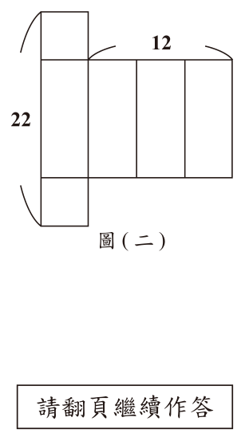
（A） 144（B） 224（C） 264（D） 300答案：（B）
詳解與考點 正解：題幹給出長方體展開圖且底面為正方形，應先由展開圖還原底面邊長與高，再用體積＝底面積×高。中間橫排的寬 12 是 3 個底面邊長之和，所以底面邊長＝12÷3＝4。縱向長 22 包含上下兩個底面邊各 4 與側面高，所以側面高＝22−4−4＝14。底面積＝4×4＝16，體積＝16×14＝224，故 B 為正解。
A：144＝12×12，是把展開圖的總寬 12 直接平方，沒有先算出底面邊長 12÷3＝4，也沒有乘上高 14。
C：若底面邊長仍為 4，體積 264 會反推出高＝264÷(4×4)＝16.5；但圖中高度應為 22−4−4＝14，錯在把高多算 2.5。
D：若底面邊長仍為 4，體積 300 會反推出高＝300÷(4×4)＝18.75；這也不等於 22−4−4＝14，表示沒有正確扣除上下兩個底面邊長。
本題考點：長方體展開圖還原——先從相連面判讀各標示長度代表幾條邊；正方形底面——12÷3＝4；體積計算——4×4×14＝224。
第 5 題
算式 \( \dfrac{9}{22} + \dfrac{11}{18} - \left( \dfrac{23}{22} - \dfrac{7}{18} \right) \) 之值為何？
（A） \( \dfrac{4}{11} \)（B） \( \dfrac{9}{10} \)（C） \( \dfrac{1}{9} \)（D） \( \dfrac{5}{4} \)答案：（A）
詳解與考點 正解：題眼是括號前有減號，因此要先去括號，並把括號內每一項變號。原式=9/22+11/18−(23/22−7/18)=9/22+11/18−23/22+7/18。先合併分母為22的項：(9−23)/22=−14/22=−7/11；再合併分母為18的項：(11+7)/18=18/18=1。最後−7/11+1=−7/11+11/11=4/11，故 A 為正解。
B：分母為18的兩項合併後等於1；若答案是9/10，則分母為22的兩項必須合併成9/10−1=−1/10，但實際為(9−23)/22=−7/11，故錯在把這組的中間值算錯。
C：若答案是1/9，則分母為22的兩項必須合併成1/9−1=−8/9，但實際為−7/11，故1/9不成立。
D：若答案是5/4，則分母為22的兩項必須合併成5/4−1=1/4，但實際為−7/11，不但數值不同，正負號也錯誤，因此5/4不成立。
本題考點：分數加減——括號前為負號時，括號內各項都要變號；先合併同分母項，得到−7/11與1，再把1改寫成11/11相加。
第 6 題
\( \sqrt{2022} \) 的值介於下列哪兩個數之間？
（A） 25，30（B） 30，35（C） 35，40（D） 40，45答案：（D）
詳解與考點 正解：題幹要判斷平方根落在哪個區間，先以相鄰整數的平方夾住 2022。44²=1936，45²=2025，且 1936<2022<2025，所以 44<√2022<45；因此 √2022 介於 40 與 45 之間，D 為正解。
A：25 與 30 的上界平方為 30²=900，900<2022，區間明顯太小，錯誤。
B：30 與 35 的上界平方為 35²=1225，1225<2022，區間太小，錯誤。
C：35 與 40 的上界平方為 40²=1600，1600<2022，區間仍太小，錯誤。它看起來接近，是因為 2022 接近 2000，但須實際比較平方值。
本題考點：平方根估算——找相鄰整數 m、m+1，逐步算 m² 與（m+1）²；若 m²<N<（m+1）²，則 m<√N<m+1。
第 7 題
已知坐標平面上有一直線 \(L\) 與一點 \(A\)。若 \(L\) 的方程式為 \(x=-2\)，\(A\) 點坐標為 \((6,5)\)，則 \(A\) 點到直線 \(L\) 的距離為何？
（A） \(3\)（B） \(4\)（C） \(7\)（D） \(8\)答案：（D）
詳解與考點 正解：直線 x=-2 是鉛直線，點到鉛直線的距離只需比較 x 坐標。A 點的 x 坐標為 6，距離=|6-（-2）|=|6+2|=8，D 為正解。
A：3 並非 |6-（-2）| 的計算結果，錯誤。
B：4 是把 x=-2 的負號誤作 x=2，算成 |6-2|，錯誤。
C：7 不符合坐標差的計算，錯誤。
本題考點：點到鉛直線距離——對直線 x=a，距離=|點的 x 坐標-a|；y 坐標不影響此距離。
第 8 題
多項式 \( 39x^2 + 5x - 14 \) 可因式分解成 \( (3x + a)(bx + c) \)，其中 \( a \)、\( b \)、\( c \) 均為整數，求 \( a + 2c \) 之值為何？
（A） \(-12\)（B） \(-3\)（C） \(3\)（D） \(12\)答案：（A）
詳解與考點 正解：題幹已指定因式形式，應以展開後的係數核對 a、b、c。39x²+5x-14=（3x+2）（13x-7），因為 3x×13x=39x²，3x×（-7）+2×13x=-21x+26x=5x，2×（-7）=-14。故 a=2、c=-7，a+2c=2+2×（-7）=2-14=-12，A 為正解。
B：-3 不是 2+2×（-7）的結果，錯誤。
C：3 未依 c=-7 代入，錯誤。
D：12 是把 a、c 的符號弄反；交叉項便無法湊成 +5x，錯誤。
本題考點：二次式因式分解——先使首項相乘為 39x²、常數相乘為 -14，再驗算兩個交叉項相加是否為 +5x；代入求值時保留常數項符號。
第 9 題
箱子內有分別標示號碼 1～6 的球，每個號碼各 2 顆，總共 12 顆。已知小茹先從箱內抽出 5 顆球且不將球放回箱內，這 5 顆球的號碼分別是 1、2、2、3、5。今阿純打算從此箱內剩下的球中抽出 1 顆球，若箱內剩下的每顆球被他抽出的機會相等，則他抽出的球的號碼，與小茹已抽出的 5 顆球中任意一顆球的號碼相同的機率是多少？
（A） \(\dfrac{3}{6}\)（B） \(\dfrac{4}{6}\)（C） \(\dfrac{3}{7}\)（D） \(\dfrac{4}{7}\)答案：（C）
詳解與考點 正解：本題是取後不放回，須先列出剩下的球。原本每個號碼各有 2 顆；抽走 1、2、2、3、5 後，剩下 1、3、4、4、5、6、6，共 7 顆。與已抽球任一號碼相同，號碼須屬於 {1、2、3、5}；剩球中符合的是 1、3、5，共 3 顆，所以機率=3/7，C 為正解。
A：3/6 的分母 6 錯誤，抽走 5 顆後應剩 12-5=7 顆。
B：4/6 同時把總剩球數算錯，錯誤。
D：4/7 把 4 號球誤列入符合號碼，或多算了符合球數，錯誤。
本題考點：不放回機率——先依每個號碼的原有顆數扣除已抽顆數，再以「符合條件的剩球數／剩球總數」計算。
第 10 題
已知一元二次方程式 \( (x-2)^2 = 3 \) 的兩根為 a、b，且 a > b，求 2a + b 之值為何？
（A） 9（B） -3（C） \( 6 + \sqrt{3} \)（D） \( -6 + \sqrt{3} \)答案：（C）
詳解與考點 正解：題幹指定 a>b，須先用開平方求兩根，再把較大根代入 a。由 (x−2)²=3，兩邊開平方得 x−2=±√3；加上 2 得 x=2±√3。因此 a=2+√3，b=2−√3。代入 2a+b=2(2+√3)+(2−√3)=4+2√3+2−√3=6+√3，故 C 為正解。
A：若只算整數部分，會得 2×2+2=6，不是 9；此值沒有依正確根代入。
B：把較大根錯當成負根或移項符號錯誤，才會得到負值；2+√3 與 2−√3 都不是負數。
D：把根號項或常數項的正負號處理錯誤；正確合併是 6+√3，不是 −6+√3。
本題考點：完全平方方程式——(x−p)²=q 時先寫 x−p=±√q，再求兩根；有大小條件時先判定較大根，代入係數時 2 只乘 a。
第 11 題
根據圖 ( 三 ) 中兩人的對話紀錄，求出哥哥買遊戲機的預算為多少元？
（A） 3800（B） 4800（C） 5800（D） 6800答案：（C）
詳解與考點 正解：題幹的原價、8 折價與預算差額可用一元一次方程式連結。設哥哥預算為 x 元，原售價比預算多 1200 元，所以原售價=x+1200。打 8 折後為 0.8(x+1200)，且折後價比預算少 200 元，所以 0.8(x+1200)=x−200。展開得 0.8x+960=x−200；兩邊減 0.8x 再加 200，得 1160=0.2x；x=1160÷0.2=5800，故 C 為正解。
A：3800 不滿足方程式，0.8(3800+1200)=4000，而 3800−200=3600。
B：4800 不滿足方程式，0.8(4800+1200)=4800，而 4800−200=4600；常見錯因是把差額方向列錯。
D：6800 不滿足方程式，0.8(6800+1200)=6400，而 6800−200=6600。
本題考點：折扣與差額列式——先分清原價、折後價、預算，8 折為原價乘 0.8；「比預算少 200」必列成折後價=x−200。
第 12 題
已知 \( p = 7.52 \times 10^{-6} \)，下列關於 \( p \) 值的敘述何者正確？
（A） 小於 \( 0 \)（B） 介於 \( 0 \) 與 \( 1 \) 兩數之間，兩數中比較接近 \( 0 \)（C） 介於 \( 0 \) 與 \( 1 \) 兩數之間，兩數中比較接近 \( 1 \)（D） 大於 \( 1 \)答案：（B）
詳解與考點 正解：題幹的 10⁻⁶ 表示要把 7.52 的小數點向左移 6 位，因此採用科學記號展開法判斷數值。p=7.52×10⁻⁶。先算 10⁻⁶=0.000001。再代入：p=7.52×0.000001=0.00000752。0<0.00000752<1，且它與 0 的距離是 0.00000752，與 1 的距離是 1−0.00000752=0.99999248，所以較接近 0。B 為正解。
A：p=0.00000752 是正數，不小於 0；錯在把負指數誤當成負數。
C：p 與 0 的距離為 0.00000752，與 1 的距離為 0.99999248，前者較小，所以不接近 1。
D：0.00000752<1，不大於 1，錯誤。
本題考點：科學記號——10⁻⁶=0.000001，乘以 10⁻⁶ 時小數點向左移 6 位；數值位置判斷——先判斷正負與是否介於 0、1，再以到兩端的距離比較接近哪一端。
第 13 題
如圖（四），\(\overline{AB}\) 為圓 \(O\) 的一弦，且 \(C\) 點在 \(\overline{AB}\) 上。若 \(\overline{AC}=6\)、\(\overline{BC}=2\)，\(\overline{AB}\) 的弦心距為 \(3\)，則 \(\overline{OC}\) 的長度為何？
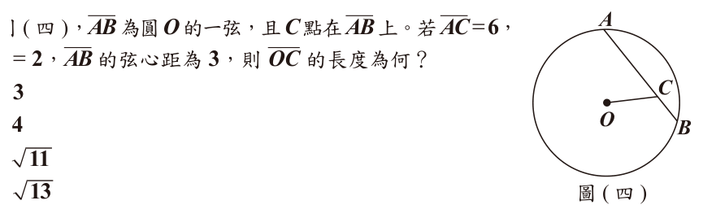
（A） \(3\)（B） \(4\)（C） \(\sqrt{11}\)（D） \(\sqrt{13}\)答案：（D）
詳解與考點 正解：題幹給弦 AB 的兩段長與弦心距，應先用垂徑定理找出弦中點，再以畢氏定理求 OC。AB＝AC＋BC＝6＋2＝8。設弦心距垂足為 M，因 OM⊥AB，M 為 AB 中點，所以 AM＝8÷2＝4。MC＝AC－AM＝6－4＝2，且 OM＝3。在直角三角形 OMC 中，OC²＝OM²＋MC²＝3²＋2²＝9＋4＝13，因此 OC＝√13，故 D 為正解。
A：3 只取弦心距 OM，沒有求出斜邊 OC，錯誤。
B：4 只取半弦 AM，沒有使用畢氏定理，錯誤。
C：√11 表示把 MC 的平方項誤算為 2，正確應為 2²＝4，錯誤。
本題考點：垂徑定理——圓心到弦的垂線會平分該弦，先由 AB＝8 得 AM＝4；畢氏定理——直角三角形斜邊平方等於兩股平方和，OC＝√（3²＋2²）＝√13。
第 14 題
某國主計處調查 2017 年該國所有受僱員工的年薪資料，並公布調查結果如圖 ( 五 ) 的直方圖所示。 ( ) 60 80 80 2017 5 5 30 25 20 18 16 14 12 10 9 8 8 7 6 108 120 132 144 () 144 圖 ( 五 ) 已知總調查人數為 750 萬人，根據圖中資訊計算，該國受僱員工年薪低於平均數的人數占總調查人數的百分率為下列何者？
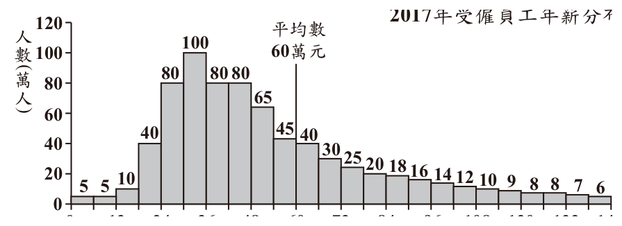
（A） 6%（B） 50%（C） 68%（D） 73%答案：（C）
詳解與考點 正解：題目問低於平均數的人數比例，平均數是 60 萬元，須把直方圖中 60 萬元以下各組人數相加。依圖得 5+5+10+40+80+100+80+80+65+45=510（萬人）。總人數為 750 萬人，所以百分率=510÷750×100%=68%，故 C 為正解。
A：6% 只取少數單一長條，沒有累計所有低於 60 萬元的組別。
B：50% 把平均數誤當作中位數；平均數不保證把人數平分。
D：73% 是把 60～66 萬元的 40 萬人也算入；題目要求「低於」60 萬元，不能包含該組。
本題考點：直方圖累計比例——先以題目給的平均數作分界，再加總符合範圍的各組人數，最後用符合人數÷總人數×100%；平均數不是中位數。
第 15 題
如圖（六），\(\triangle ABC\) 中，\(D\) 點在 \(\overline{AB}\) 上，\(E\) 點在 \(\overline{BC}\) 上，\(\overline{DE}\) 為 \(\overline{AB}\) 的中垂線。若 \(\angle B = \angle C\)，且 \(\angle EAC > 90^\circ\)，則根據圖中標示的角，判斷下列敘述何者正確？
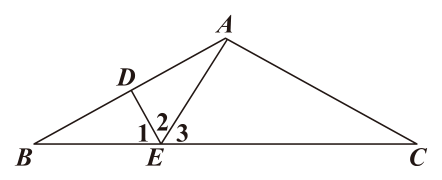
（A） \(\angle 1 = \angle 2\)，\(\angle 1 < \angle 3\)（B） \(\angle 1 = \angle 2\)，\(\angle 1 > \angle 3\)（C） \(\angle 1 \neq \angle 2\)，\(\angle 1 < \angle 3\)（D） \(\angle 1 \neq \angle 2\)，\(\angle 1 > \angle 3\)答案：（B）
詳解與考點 正解：要同時判斷角相等與角大小，先用中垂線證明全等，再把∠EAC＞90°代入三角形內角和。DE為AB的中垂線，所以D是AB的中點，DA=DB，且DE⊥AB。於△ADE與△BDE中，DA=DB、DE為共用邊、∠ADE=∠BDE=90°，因此兩三角形全等，得到∠1=∠2。再看直角三角形BDE，∠1＋∠B=90°，所以∠B=90°−∠1。又∠B=∠C，因此∠C=90°−∠1。在△AEC中，∠EAC＋∠3＋∠C=180°，代入∠C後得∠EAC＋∠3＋90°−∠1=180°，整理得∠EAC=90°＋∠1−∠3。題設∠EAC＞90°，所以90°＋∠1−∠3＞90°，兩邊同減90°得∠1−∠3＞0°，即∠1＞∠3。因此B「∠1=∠2，∠1＞∠3」為正解。
A：∠1=∠2正確，但由90°＋∠1−∠3＞90°可得∠1＞∠3，不是∠1＜∠3，錯誤。
C：△ADE與△BDE全等，所以∠1=∠2；且上述演算得到∠1＞∠3，兩項都與C相反，錯誤。
D：後半句∠1＞∠3正確，但前半句∠1≠∠2違反全等三角形的對應角相等，錯誤。
本題考點：中垂線與全等——以DA=DB、DE共用及兩個直角證明△ADE與△BDE全等，得到∠1=∠2；角度比較——先由直角三角形寫出∠C=90°−∠1，再代入△AEC的內角和，將∠EAC＞90°化成∠1＞∠3。
第 16 題
緩降機是火災發生時避難的逃生設備，圖（七）是廠商提供的緩降機安裝示意圖，圖中呈現在三樓安裝緩降機時，使用此緩降機直接緩降到一樓地面的所需繩長（不計安全帶）。若某棟建築的每個樓層高度皆為 3 公尺，則根據圖（七）的安裝方式在該建築八樓安裝緩降機時，使用此緩降機直接緩降到一樓地面的所需繩長（不計安全帶）為多少公尺？
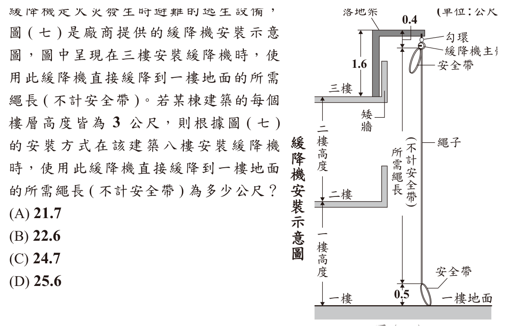
（A） 21.7（B） 22.6（C） 24.7（D） 25.6答案：（A）
詳解與考點 正解：題幹給每層高 3 公尺，須依安裝圖的垂直長度與固定偏移量計算。八樓樓地板到一樓地面跨 7 層，垂直段=7×3=21（公尺）。所需繩長=(21+1.6)−0.4−0.5=22.6−0.4−0.5=21.7（公尺），故 A 為正解。亦可先算三樓為 (6+1.6)−0.4−0.5=6.7，再加 5×3=15，得 6.7+15=21.7。
B：22.6 是 21+1.6，漏扣圖中的 0.4 公尺與 0.5 公尺。
C：24.7 比正確值多 3，等於把樓層差多算 1 層。
D：25.6 是把垂直段錯算為 8×3=24 後再加減固定量所得；八樓到一樓地面只跨 7 層。
本題考點：圖形長度與樓層差——先數兩位置間的樓層間隔，再乘每層高度，最後依圖加減固定長度；樓層編號不能直接當作跨越層數。
第 17 題
圖（八）為兩直線 \(L\)、\(M\) 與 \(\triangle ABC\) 相交的情形，其中 \(L\)、\(M\) 分別與 \(\overline{BC}\)、\(\overline{AB}\) 平行。根據圖中標示的角度，求 \(\angle B\) 的度數為何？
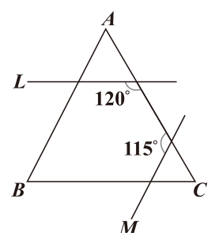
（A） 55（B） 60（C） 65（D） 70答案：（A）
詳解與考點 正解：題幹有兩組平行線，應先用平行線同位角與補角求出 △ABC 的兩個內角，再用三角形內角和。L∥BC，且 L 與 AC 相交；圖示的 120° 與 ∠C 為平角關係，所以 ∠C=180°−120°=60°。M∥AB，且 M 與 AC 相交；圖示的 115° 與 ∠A 為平角關係，所以 ∠A=180°−115°=65°。三角形內角和為 ∠A＋∠B＋∠C=180°，代入得 65°＋∠B＋60°=180°，∠B=180°−65°−60°=55°，故 A 為正解。
B：60° 是只算出 ∠C 的角度，未再用內角和扣除 ∠A，錯誤。
C：65° 是只算出 ∠A 的角度，未再用內角和扣除 ∠C，錯誤。
D：70° 是直接把 115°、120° 當作三角形內角處理；它看起來對，是因為兩個題示角數值很醒目，但它們須先取補角才是 ∠A、∠C，錯誤。
本題考點：平行線角度——同位角相等，與直線相鄰的角和為 180°；三角形內角和——先求已知的兩個內角，再以 ∠B=180°−∠A−∠C 求第三角。
第 18 題
某鞋店正舉辦開學特惠活動，圖 ( 九 ) 為活動說明。圖 ( 九 ) 小徹打算在該店同時購買一雙球鞋及一雙皮鞋，且他有一張所有購買的商品定價皆打 8 折的折價券。若小徹計算後發現使用折價券與參加特惠活動兩者的花費相差 50 元，則下列敘述何者正確？
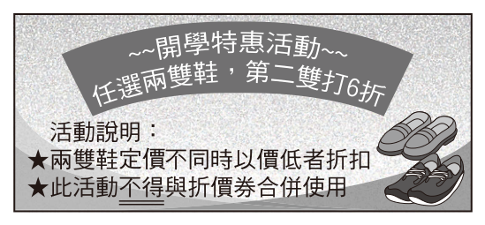
（A） 使用折價券的花費較少，且兩雙鞋的定價相差100元（B） 使用折價券的花費較少，且兩雙鞋的定價相差250元（C） 參加特惠活動的花費較少，且兩雙鞋的定價相差100元（D） 參加特惠活動的花費較少，且兩雙鞋的定價相差250元答案：（B）
詳解與考點 正解：兩種方案都買一雙球鞋與一雙皮鞋，先以較貴鞋 M、較便宜鞋 m 比較總價。特惠活動是較便宜的一雙打 6 折，花費=M+0.6m；折價券全打 8 折，花費=0.8(M+m)。兩者差=(M+0.6m)−0.8(M+m)=M+0.6m−0.8M−0.8m=0.2M−0.2m=0.2(M−m)=50。故 M−m=50÷0.2=250。差為正，表示特惠活動較貴，使用折價券較少，故 B 為正解。
A：雖正確判斷折價券較省，但價差應為 250 元，不是 100 元。
C：100 元不是由 0.2(M−m)=50 解得，且較省者誤判為特惠活動。
D：價差 250 元正確，但差為正表示特惠活動較貴，較省者不是特惠活動。
本題考點：折扣方案比較——把兩方案都寫成總價後相減；差值為正表示前式較貴，0.2(M−m)=50 時兩鞋定價差為 250 元。
第 19 題
如圖（十），\(\triangle ABC\) 的重心為 \(G\)，\(\overline{BC}\) 的中點為 \(D\)，今以 \(G\) 為圓心，\(\overline{GD}\) 長為半徑畫一圓，且作 \(A\) 點到圓 \(G\) 的兩切線段 \(\overline{AE}\)、\(\overline{AF}\)，其中 \(E\)、\(F\) 均為切點。根據圖中標示的角與角度，求 \(\angle 1\) 與 \(\angle 2\) 的度數和為多少？
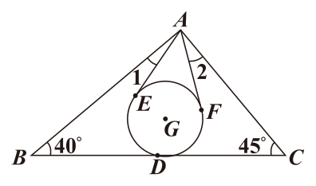
（A） 30（B） 35（C） 40（D） 45答案：（B）
詳解與考點 正解：題幹同時給重心與切線，先用重心比例求切線三角形的角。AD 是中線，重心分中線 AG:GD=2:1；令 GD=r，則 AG=2r。半徑 GE 垂直切線 AE，所以在直角三角形 AEG 中，sin∠EAG=GE÷AG=r÷2r=1/2，故 ∠EAG=30°。兩切線對稱，∠EAF=2×30°=60°。又 ∠BAC=180°−40°−45°=95°，所以 ∠1+∠2=95°−60°=35°，故 B 為正解。
A：30°只得到單側的 ∠EAG，沒有用三角形內角和及兩切線夾角。
C：40°不是由 95°−60° 得出，重心比例或切線角的計算有誤。
D：45°相當於只以 95°減錯角度；它看起來對，是因為容易漏掉 ∠EAF 由兩個 30°組成。
本題考點：重心與切線——重心把中線按頂點到重心：重心到中點=2:1 分割；半徑垂直切線，直角三角形可由 sin 值求角，再用三角形內角和扣除切線夾角。
第 20 題
圖（十一）為一張正三角形紙片 ABC，其中 D 點在 \(\overline{AB}\) 上，E 點在 \(\overline{BC}\) 上。今以 \(\overline{DE}\) 為摺線將 B 點往右摺後，\(\overline{BD}\)、\(\overline{BE}\) 分別與 \(\overline{AC}\) 相交於 F 點、G 點，如圖（十二）所示。若 \(\overline{AD}=10\)，\(\overline{AF}=16\)，\(\overline{DF}=14\)，\(\overline{BF}=8\)，則 \(\overline{CG}\) 的長度為多少？
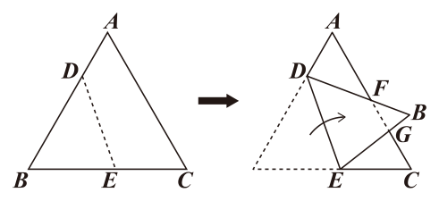
（A） 7（B） 8（C） 9（D） 10答案：（C）
詳解與考點 正解：摺疊保長且正三角形的角為 60°，可由相似三角形求出 FG，再從 CF 扣除。摺後 FB'=BF=8，且 FA=16，所以 FB'÷FA=8÷16=1÷2。又 ∠GFB'與∠DFA 為對頂角，故 △GFB'∼△DFA，FG÷FD=1÷2，FG=14×1÷2=7。摺疊保長，DB=DB'=DF+FB'=14+8=22，因此正三角形邊長 AB=AD+DB=10+22=32；CF=AC−AF=32−16=16；CG=CF−FG=16−7=9，故 C 為正解。
A：7 是 FG，不是題目要求的 CG。
B：8 把 FB 的已知長度誤當作 CG，未使用相似比與 CF−FG。
D：10 不是 16−7 的結果，對應邊比例或最後扣除錯誤。
本題考點：摺疊與相似——摺疊保持線段長度；以對頂角和對應邊比建立相似，先求 FG，再以 CG=CF−FG 求所需線段。
第 21 題
有一直徑為 AB 的圓，且圓上有 C、D、E、F 四點，其位置如圖 ( 十三 ) 所示。若 AC = 6， AD = 8， AE = 5，AF = 9，AB = 10，則下列弧長關係何者正確？
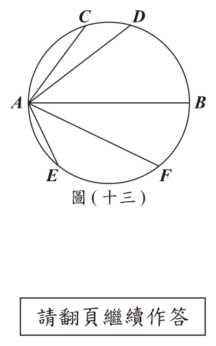
（A） AC+AD=AB，AE+AF=AB（B） AC+AD=AB，AE+AF≠AB（C） AC+AD≠AB，AE+AF=AB（D） AC+AD≠AB，AE+AF≠AB答案：（B）
詳解與考點 正解：AB 是直徑，先以直徑所對圓周角為直角求等弦，再檢驗另一組。∠ACB=90°，所以 BC=√(AB²−AC²)=√(10²−6²)=√64=8=AD。等弦對等弧，弧AD=弧BC，故弧AC+弧AD=弧AC+弧BC=半圓弧AB，第一式成立。再算 BE=√(AB²−AE²)=√(10²−5²)=√75，約為 8.66；AF=9≠√75，第二式不成立，故 B 為正解。
A：第一式成立，但第二式需 AF=BE；9≠√75，不能判為成立。
C：把第一式判錯，忽略 BC=AD 所以兩弦對應弧相等。
D：同時把第一式判錯；弧AC加弧AD確實等於半圓弧AB。
本題考點：圓的弦與弧——直徑所對圓周角為 90°，可用畢氏定理求弦長；等弦對等弧，判斷弧和前須先驗證對應弦是否相等。
第 22 題
已知坐標平面上有二次函數 \( y = -(x+6)^2 + 5 \) 的圖形，函數圖形與 \( x \) 軸相交於 \( (a, 0) \)、\( (b, 0) \) 兩點，其中 \( a < b \)。今將此函數圖形往上平移，平移後函數圖形與 \( x \) 軸相交於 \( (c, 0) \)、\( (d, 0) \) 兩點，其中 \( c < d \)，判斷下列敘述何者正確？
（A） \( (a+b) = (c+d) \)，\( (b-a) < (d-c) \)（B） \( (a+b) = (c+d) \)，\( (b-a) > (d-c) \)（C） \( (a+b) < (c+d) \)，\( (b-a) < (d-c) \)（D） \( (a+b) < (c+d) \)，\( (b-a) > (d-c) \)答案：（A）
詳解與考點 正解：圖形往上平移只改變頂點高度，不改變對稱軸，因此要用拋物線的對稱性比較兩根。原式 y=−(x+6)²+5 的對稱軸是 x=−6，令 y=0 得 (x+6)²=5，所以 a=−6−√5、b=−6+√5；a+b=−12，b−a=2√5。向上平移 k（k>0）後，方程式為 0=−(x+6)²+5+k，得 c=−6−√(5+k)、d=−6+√(5+k)。故 c+d=−12=a+b，且 d−c=2√(5+k)>2√5=b−a，故 A 為正解。
B：雖根和相等，但向上平移後 √(5+k)>√5，兩根距離應變大，不是變小。
C：對稱軸仍是 x=−6，所以根和仍為 −12，不會變大。
D：根和不會變大，且兩根距離的比較也寫反。
本題考點：拋物線平移與根——上下平移不改變對稱軸，兩根和等於對稱軸橫坐標的 2 倍；開口向下的圖形上移時與 x 軸交點向兩側擴張。
第 23 題
\( \triangle ABC \) 的邊上有 \( D \)、\( E \)、\( F \) 三點，各點位置如圖（十四）所示。若 \( \angle B = \angle FAC \)，\( \overline{BD} = \overline{AC} \)，\( \angle BDE = \angle C \)，則根據圖中標示的長度，求四邊形 \( ADEF \) 與 \( \triangle ABC \) 的面積比為何？
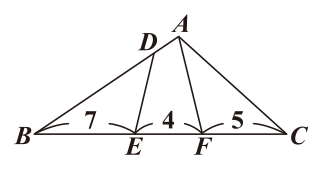
（A） \( 1:3 \)（B） \( 1:4 \)（C） \( 2:5 \)（D） \( 3:8 \)答案：（D）
詳解與考點 正解：題幹的等角條件可各建一組相似三角形，再從整個三角形扣除兩塊。圖示 BC=16，且由 ∠FAC=∠B、∠FCA=∠BCA，得 △CAF∼△CBA。相似比給 CA²=CF×CB=80，且 △CAF:△ABC=CF:CB=5:16。又 ∠BDE=∠C、∠DBE=∠B，得 △BDE∼△BCA；BD=AC，所以 △BDE:△ABC=AC²:BC²=80:256=5:16。四邊形 ADEF 的面積比=1−5/16−5/16=1−10/16=6/16=3/8，故 D 為正解。
A：1:3 沒有正確扣除兩個相似小三角形的面積。
B：1:4 只扣除一塊或誤把兩塊面積各算錯。
C：2:5 把邊長比直接當成面積比，未依相似比平方或題設比例計算。
本題考點：相似三角形面積——先由兩角相等建立相似，再以對應邊求面積比；剩餘四邊形面積比=1−兩個被扣除三角形的面積比。
第 24 題
已知日光燈管的發光效率為光通量與功率的比值，甲、乙兩人根據表 ( 一 )、表 ( 二 ) 的資訊提出以下看法： ( 甲 ) PA-20 日光燈管的發光效率比 PB-14 日光燈管高 ( 乙 ) PA 日光燈管中，功率較大的燈管其發光效率較高關於甲、乙兩人的看法，下列敘述何者正確？
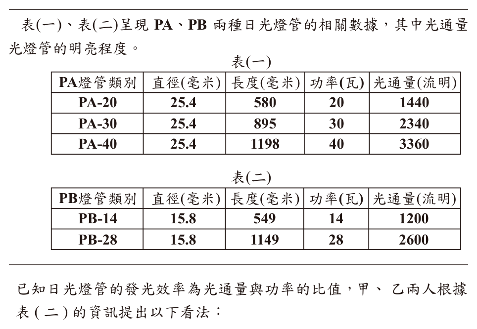
（A） 甲、乙皆正確（B） 甲、乙皆錯誤（C） 甲正確，乙錯誤（D） 甲錯誤，乙正確答案：（D）
詳解與考點 正解：題幹明定發光效率＝光通量÷功率，因此要把每支燈管的光通量除以對應功率。PA-20 的發光效率＝1440÷20＝72；PB-14 的發光效率＝1200÷14＝85 又 5/7，因為 72＜85 又 5/7，所以甲錯誤。PA 系列中，PA-20＝1440÷20＝72，PA-30＝2340÷30＝78，PA-40＝3360÷40＝84；72＜78＜84，可見功率較大的燈管發光效率較高，所以乙正確，故 D 為正解。
A：甲、乙皆正確，但甲的比較應為 72＜85 又 5/7，並非 PA-20 較高。
B：甲、乙皆錯誤，但乙的三個比值為 72、78、84，確實隨功率增加而提高。
C：甲正確、乙錯誤，同時把 72＜85 又 5/7 誤判為甲正確，並忽略 72＜78＜84 所顯示的趨勢。
本題考點：比值比較——發光效率＝光通量÷功率，必須將各燈管的具體數值代入後再比較；系列趨勢——PA 系列的效率依序為 72、78、84，功率與效率同向增加。
第 25 題
有一間公司請水電工程廠商安裝日光燈管，廠商提供兩種方案如表（三）所示。已知 \(n\) 支功率皆為 \(w\) 瓦的燈管都使用 \(t\) 小時後消耗的電能（度）\(= \dfrac{n}{1000} \times w \times t\)，若每支燈管使用時間皆相同，且只考慮燈管消耗的電能並以每度 5 元計算電費，則兩種方案相比，燈管使用時間至少要超過多少小時，採用省電方案所節省的電費才會高於兩者相差的施工費用？
表（三） 方案 施工內容 施工費用（含材料費） 基本方案 安裝 90 支 PA-40 日光燈管 45000 元 省電方案 安裝 120 支 PB-28 日光燈管 60000 元
（A） 12200（B） 12300（C） 12400（D） 12500答案：（D）
詳解與考點 正解：表（三）給基本方案施工費 45000 元、90 支 PA-40 燈管；省電方案施工費 60000 元、120 支 PB-28 燈管，須先算施工費差與每小時電費差。施工費差=60000−45000=15000（元）。基本方案每小時耗電=90÷1000×40×1=3.6（度）；省電方案每小時耗電=120÷1000×28×1=3.36（度）。每小時少耗=3.6−3.36=0.24（度），每小時省電費=0.24×5=1.2（元）。要使節省電費高於施工費差，列 1.2t>15000；兩邊除以 1.2，得 t>12500。因此至少要超過 12500 小時，故 D 為正解。
A：12200 小時時節省=1.2×12200=14640 元，未超過 15000 元。
B：12300 小時時節省=1.2×12300=14760 元，未超過 15000 元。
C：12400 小時時節省=1.2×12400=14880 元，未超過 15000 元。
本題考點：電能與一次不等式——電能=燈管數÷1000×功率×使用時間；先以每度電費換算每小時省下的金額，再以節省金額>施工費差列不等式，嚴格大於表示使用時間須超過臨界值。
第 26 題
健康生技公司培養綠藻以製作「綠藻粉」，再經過後續的加工步驟，製成綠藻相關的保健食品。已知該公司製作每 1 公克的「綠藻粉」需要 60 億個綠藻細胞。請根據上述資訊回答下列問題，完整寫出你的解題過程並詳細解釋：
(1) 假設在光照充沛的環境下，1 個綠藻細胞每 20 小時可分裂成 4 個綠藻細胞，且分裂後的細胞亦可繼續分裂。今從 1 個綠藻細胞開始培養，若培養期間綠藻細胞皆未死亡且培養環境的光照充沛，經過 15 天後，共分裂成 \(4^k\) 個綠藻細胞，則 \(k\) 之值為何？
(2) 承 (1)，已知 60 億介於 \(2^{32}\) 與 \(2^{33}\) 之間，請判斷 \(4^k\) 個綠藻細胞是否足夠製作 8 公克的「綠藻粉」？
標準答案未收錄
詳解與考點 考點：指數律與指數大小比較，搭配時間單位換算。
(1) 先把培養時間換成小時：15 天 = 15×24 = 360 小時。每 20 小時分裂一次，故分裂次數為 360÷20 = 18（次）。
每分裂一次，1 個細胞變成 4 個，等於乘以 4。從 1 個細胞開始，經過 18 次分裂後共有 1×4^18 = 4^18 個細胞。
題目說共分裂成 4^k 個，比較指數得 k = 18。
(2) 先算製作 8 公克「綠藻粉」所需的細胞數：每 1 公克需 60 億個，8 公克需 8×60 億 = 480 億（個）細胞。
接著估算 4^k = 4^18 的大小。利用指數律：4^18 =（2^2）^18 = 2^36。
題目已知 60 億介於 2^32 與 2^33 之間，即 2^32 < 60 億 < 2^33。
把所需的 480 億改寫成 480 億 = 60 億×8 = 60 億×2^3，兩邊同乘 2^3：
2^32×2^3 < 60 億×2^3 < 2^33×2^3，即 2^35 < 480 億 < 2^36。
因此所需細胞數 480 億 < 2^36 = 4^18 = 細胞總數。
結論：4^18 個綠藻細胞「足夠」製作 8 公克的「綠藻粉」。
（實際數值：4^18 = 2^36 = 687.19…億個，明顯多於所需的 480 億個。）
最終答案：(1) k = 18。(2) 足夠。
第 27 題
一副完整的撲克牌有 4 種花色，且每種花色皆有 13 種點數，分別為 2、3、4、5、6、7、8、9、10、J、Q、K、A，共 52 張。某撲克牌遊戲中，玩家可以利用「牌值」來評估尚未發出的牌之點數大小。「牌值」的計算方式為：未發牌時先設「牌值」為 0；若發出的牌點數為 2 至 9 時，表示發出點數小的牌，則「牌值」加 1；若發出的牌點數為 10、J、Q、K、A 時，表示發出點數大的牌，則「牌值」減 1。例如：從一副完整的撲克牌發出了 6 張牌，點數依序為 3、A、8、9、Q、5，則此時的「牌值」為 \( 0 + 1 - 1 + 1 + 1 - 1 + 1 = 2 \)。請根據上述資訊回答下列問題，完整寫出你的解題過程並詳細解釋。（1）若一副完整的撲克牌發出了 6 張，此時「牌值」為 \( -6 \)，請問是否可能發生？若可能，請舉一例；若不可能，請解釋理由。（2）若一副完整的撲克牌發出了 28 張牌，且此時「牌值」為 0，請問尚未被發出的牌中，點數小的牌（點數為 2 至 9）與點數大的牌（點數為 10、J、Q、K、A）的張數相差多少？（3）承（2），若從尚未被發出的牌中隨機抽取一張牌，請問這張牌的點數是點數大的牌之機率為多少？
標準答案未收錄
詳解與考點 考點：依規則建立「牌值」的加減模型，並用一次方程式與古典機率求解。
先整理牌的張數：點數小的牌（2 到 9，共 8 種）每種 4 張，計 8×4=32 張，每發 1 張牌值加 1；點數大的牌（10、J、Q、K、A，共 5 種）每種 4 張，計 5×4=20 張，每發 1 張牌值減 1。兩者合計 32+20=52 張，與一副 52 張相符。
(1) 發出 11 張小的、4 張大的，牌值依規則計算：
牌值 = 11×(+1) + 4×(−1) = 11 − 4 = 7。
故此時牌值為 7。
(2) 設已發出的 28 張中，小的有 a 張、大的有 b 張。
由總張數：a + b = 28。
由牌值：a×(+1) + b×(−1) = 10，即 a − b = 10。
兩式相加得 2a = 38，故 a = 19、b = 9。
因此剩下的牌中：
小的剩 32 − 19 = 13 張，大的剩 20 − 9 = 11 張，
剩牌共 13 + 11 = 24 張（也等於 52 − 28 = 24，吻合）。
每張被發出的機會相等，故下一張是點數大的牌的機率：
P = 11/24。
答：(1) 牌值為 7；(2) 機率為 11/24。
其他年度
回到國中教育會考數學的年度總覽 ，
或到國中教育會考題庫首頁 看其他科目。
題目與標準答案出自心測中心 會考歷屆試題（依著作權法 §9，考試試題不受著作權保護）。依中華民國《著作權法》第 9 條第 1 項第 5 款，
依法令舉行之各類考試試題不得為著作權之標的，得自由利用。詳解為 AI 整理的學習輔助，
並非官方標準答案 ；中華民國會修訂，引用前請對照現行版本查證。